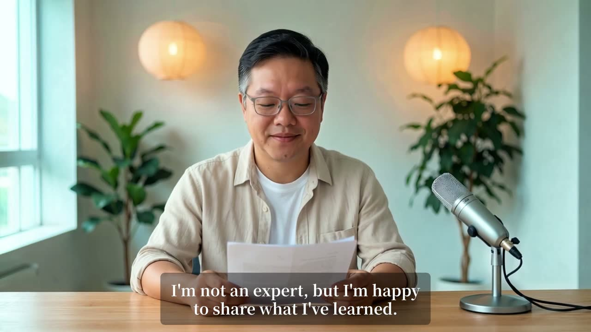
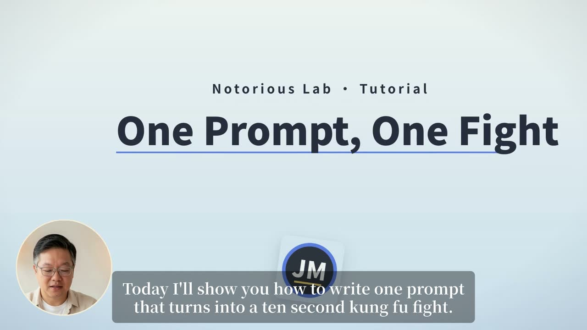
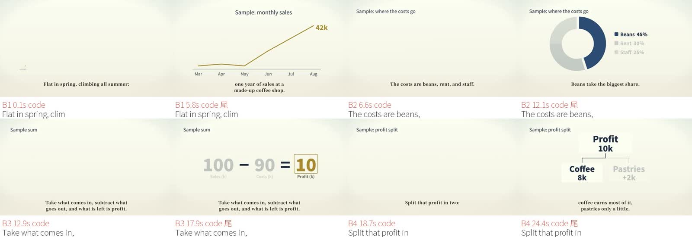

一支解說片需要的，一段一段來
下面的畫面都是實際做出來的成片與工具輸出。
在自己的電腦上配音，每句挑最準的那一條
每句話錄幾條，轉成文字和稿比對，自動挑最接近的一條串接。常被唸錯的字寫進一張共用的讀音表，之後每支片都照著改。
- 用十秒左右的參考聲音就能配整支片
- 沒有現成的聲音，可以用文字描述設計一個合成聲音
27 種場景，說到哪個字，畫面動到哪裡
折線、圓餅、算式、拆解、對照、清單、時間軸、地圖路線、逐段標重點的文字。你在稿裡寫「說到這個詞的時候出現」，程式照配音的實際時間對上去。引言隨旁白逐字從模糊浮現、劃掉改寫、時間軸從這一段滑到下一段、拉紅線的線索板。15 套長相，還沒配音就能用這一集自己的三拍並排試看。

需要實景的那幾拍，交給影片生成平台
工具先算出每個鏡頭要幾秒、寫好提示詞，排成一張跑單。預設接 VideoExpress，自動送出、收回；有 Google AI 方案的話，單一鏡頭也能交給 Google Flow（Omni、Veo），在你已登入的 Chrome 裡做，下載後連同提示詞一起歸檔。換別家或手動生成也可以，照檔名放回來就好。回來的片會量長度、檢查首尾有沒有壞格。

examples/brewing 的第一拍：生成的鏡頭接進時間軸，主持人圓框與字幕照樣疊上去。對嘴的主持人，三種型態
旁白切段送去做對嘴，回來接回時間軸。可以放在角落的圓框、右邊的框，或整個畫面。造型圖會先做幾張給你挑，定了才送出。
- 只用你自己的樣子，或你有權使用的人物
- 聲音要和畫面上的人相符



字幕跟著聲音走，不用手動對
配音在本機轉出每個字的時間，字幕與畫面都照這份時間排。也會另外產出帶時間軸的字幕檔備用。

做完不是結束，AI 會自己再確認一遍
每一支出片當下就檢查，不論片型：音畫長度、片中黑格、響度與峰值、音效有沒有真的混進去、是不是用最新的素材做的。結果和成片的 SHA-256 一起留在片旁，上傳時只認這一支。解說片再把每一拍的開頭與結尾各截一格排成一張表，agent 必須實際讀過、逐格檢查才能回報完成；看不清楚的直接回報，不亂猜。

品味的事只提醒、不擋：句子之間配樂沒讓開、開場同一個畫面停超過 5 秒（封面不算）、生成畫面多到高點跳不出來、這一集和前三集太像。門檻來自實測已上架的片，出處都寫在程式裡。
配樂與音效
背景音樂由程式照畫面事件作曲，段落開頭落在拍點上；要一首有歌詞的歌，可以用自己 Colab 上的 MiniMax Music 3 或 Google Flow Music。音效自動對到畫面出現的那一刻。
開工與出片清單
送出生成、上傳之前，逐題確認該問的事：授權、出處、有沒有畫錯人。沒答完就停下。
上傳 YouTube
排程、縮圖、說明欄、合成內容標記一次帶上。要不要上傳、什麼時候公開，由你說了算。
看懂一支好片的節奏
把欣賞的片和自己的片並排量：鏡頭長度、開場換畫面的速度、說話佔多少、句間多安靜，再排出每格寫著旁白的聯絡表。只量，不替你下判斷。